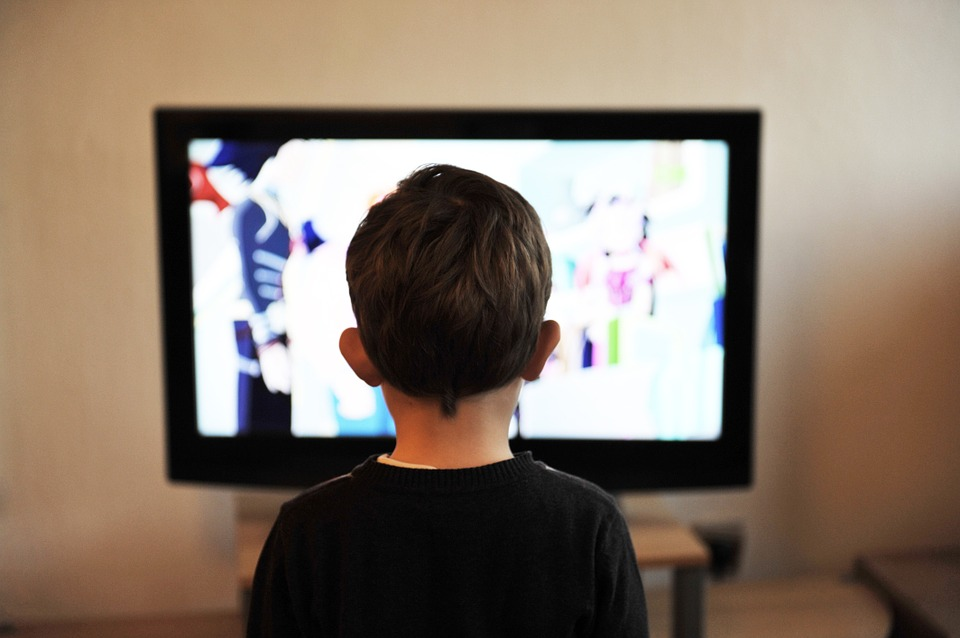
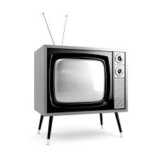

Televisión desde
1884 hasta 2014
1884-1976
-1884: Los primeros televisores que se pueden considerar comerciales fueron de tipo mecánico y se basaban en un disco giratorio, (el disco Nipkow patentado por el ingeniero alemán Paul Nipkow)
-1927: Televisor en blanco y negro. El inventor americano Philo Taylor Farnsworth consiguio crear la primera televisión electrónica en blanco y negro, 9 años despues, 1936, la BBC ya empezó a producir transisiones regulares. Así empezó el romance con la televisión. Estos primeros modelos utlilizaban enormes tubos de rayos catódicos que tenían grandes filamentos calentados, parecidos a las bombillas. I
-1940: Hubo algunos éxitos en la programación del primer televisor a color, pero el paso de los usuarios a estos televisores fue lento, y con el tiempo los ingenieros fueron mejorando la tecnología a color. Finalmente los largometrajes alcanzaron una calidad suficiente para llegar al público. Gracias a este nuevo mundo se puede experimentar un mundo a color mas realista. S
-1976: Hasta los años 70 no se podia elegir que ver no cuando verlo, pero el VHS (Video Home Systems) nos abrio las puertas al mundo de los contenidos a la carta, a través de las cintas de casete, los reproductores VHS permitieron que el espectador asumiera el control de su televisor. M

1995-2014
-1995: Al ser más pequeño y ligero que su predecesor, la llegada del DVD implicó la desaparición del VHS, El DVD nos trajo mejores imágenes, calidad de sonido y capacidad de almacenamiento.Fue todo un éxito. B
-2009: Hasta que llegaron los televisores LED (Light Emitting Diode), las pantallas utlilizaban métodos mucho más complicados. Se empezó con los tubos de rayos catódicos y con los avances sucesivos se necesitaban muchas capas y retoiluminación, hasta que llegó las pantallas LCD (Liquid Crystal Display). Las pantallas led transformaron las enormes cajas negras de antes en ligeros y discretos modelos a los que estabamos acostumbrados hoy en día. I
-2010: A pesar de los modelos de Smart TV de Samsung le permitían a los usuarios a acceder a internet y compartir fotos, fue la inclusión de contendiso a la carta lo que le hizo que la Smart TV pasara a ser el núcleo del salón. Ahora al no tener que conectar tu portátil a la tele con un cable, ver los últimos programas y estrenos. S
-2014: Los televisores QLED de Samsung tienen más de mil millones de colores. La inigualable fuente de luz amplía el espectro de colores consiguiendo un volumen de color hasta 100%. Esta inyección de color en películas programas, e incluso juegos. M
.jpeg)